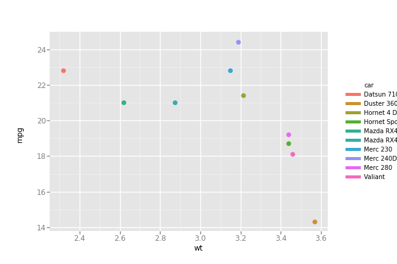

Comparing python plotting libraries
introduction
As mentioned in a previous post, I've been trying to pick up python, coming from mostly
using R over the past 5-7 years for data analysis, stats, and a lot of plotting. I found
python's plotting landscape quite a bit more confusing than I expected, with tons of
options compared to the typical reigning R champions: base, lattice, and ggplot2.
Granted, there are a ton of other R contenders as well, such as plotly and rCharts,
but the three above are the most common. I stick almost exclusively to ggplot2, and
rarely find something I can't do (granted, this is typical science-y stuff, not
infographics or really complicated stuff). To educate myself, I went through and plotted a
pretty standard dataset in various ways to see how one would do it in a bunch of python
libraries:
the example
I started really simple. Three types of plots: a simple bar, a dot plot (basically a bar plot, but makes Tufte proud with a higher data:ink ratio), and a scatter plot colored by group.
The bar chart in R:
library(ggplot2)
data(mtcars)
df <- mtcars[1:5, ]
df$car <- rownames(df)
ggplot(df, aes(x = car, y = mpg)) + geom_bar(stat="identity")
A dot plot:
ggplot(df, aes(x = car, y = mpg)) + geom_point() + expand_limits(y=0)
And lastly, we'll use a bit more data and do a colored scatter plot:
df <- mtcars[1:10, ]
df$car <- rownames(df)
ggplot(df, aes(x = wt, y = mpg, colour = car)) + geom_point()
Here are our three plots:


ggpy
Porting ggplot2 to python is an amazing concept. The whole idea behind the grammar
of graphics is how little the code needs to change for different visualizations. We're
only changing some mappings (some aspect of the data leads to some aesthetic) and the
geometry being used.
The above is almost identical using the port for the bar chart. I dislike that the
aesthetic keyword is weight and not simply y. This surprised someone else, too. It
also causes there to be no y-axis label by default; I had to manually add it in.
I also don't love how ggpy handles limits. Note the dot plot from ggplot2 and the
nice little padding above the highest dot. In ggpy, this didn't seem to work well out of
the box. I could fix it with scale_y_continuous, but why should I have to? This also
makes for requiring what I consider hokey, like:
... + scale_y_continuous(limits=(0, max(df['mpg'])*1.1))
I could do that, but again, it's extra effort. In my own workflow, I find I'm often visualizing some variables pretty similarly. I'll copy and paste code blocks and switch out variable names. This is one more thing to need to remember, and perhaps the 1.1 multiplier wouldn't work so well if the data range was different by an order or two of magnitude. Smart ranges should "just work" in my opinion.
Another complaint has to do with saving out the files. I'm not showing it below, but these were each generated with:
p = ggplot(...)
p.save('filename.png', width=w, height=h, dpi=300)
For the bar and dot, things were fine using width=9, height=6 (inches), but using this
for the scatter seemed not to incorporate the legend in the width. Using the same size, I
got this:

To get the legend to fit, I had to bump the size, but that makes the text labels much
smaller with respect to the plot. In ggplot, I could fix this with some theme() options; I didn't get far
enough to hunt the equivalent in ggpy.
from ggplot import *
ggplot(df, aes(x='car', weight='mpg')) + geom_bar(stat='identity') + scale_y_continuous('mpg')
For the dot plot, note the switch back to y=:
ggplot(df, aes(x='car', y='mpg')) + geom_point() + ylim(low=0)
And the scatter plot:
ggplot(df, aes(x='wt', y='mpg', color='car')) + geom_point()
Here's what we get!


matplotlib
From my reading, this looks like the loved and hated "bread and butter" of python
plotting. I think the biggest complaint I've seen is the verbosity. I didn't experience
much of this, likely due to how simple these examples are.
I ran into the same quirk as with ggpy with respect to expanding the dot plot y-axis
limits. I could pass ylim(0) to get zero included, but it would cut off the top dot. I
had to do the hokey scaling bit again.
Lastly, the process of getting colors by groups was not awesome. I found I could sort of manually map each group to a color or do it the canonical way and loop through the data, adding a layer of dots for each group. That also required some fiddling with the legend location.
The bar plot:
import matplotlib.pyplot as plt
plt.figure(figsize=(9, 6))
plt.bar(df['car'], df['mpg'])
plt.show()
Dot plot:
plt.figure(figsize=(9, 6))
plt.scatter(df['car'], df['mpg'])
plt.ylim(0, max(df['mpg'])*1.1)
plt.show()
For the colored scatter plot, which I had a helluva time getting to save as a file. I
originally had to just screenshot the plot from jupyter lab, but ended up getting the
answer, which was that my plt.figure() (now commented) goofs with the plt.subplots()
command.
fig, ax = plt.subplots()
# plt.figure(figsize=(12, 9))
for ind in df.index:
ax.scatter(df.loc[ind, 'wt'], df.loc[ind, 'mpg'], label=ind)
ax.legend(bbox_to_anchor=(1.05, 1), loc=2)
plt.show()
seaborn
Seaborn was pretty straightforward. Not much else to say!
import seaborn as sns
plt.figure(figsize=(9, 6))
sns.barplot(x='car', y='mpg', data=df)
plt.show()
plt.figure(figsize=(9, 6))
sns.stripplot(x='car', y='mpg', data=df)
plt.ylim(0)
plt.show()
sns.lmplot(x='wt', y='mpg', hue='car',
data=df, fit_reg=False)
plt.show()
plotly
For these plots, I left in the jupyter lab commands for plotting. To save them out, I
clicked the camera icon in the plotly embedded plot. Surprisingly, you can find evidence
that people want to save directly, and the solution is not awesome:
plotly.offline.plot(trace, image='png', image_filename='filename')
For me, this opens a new tab and automatically saves the file. It saves it in
~/Downloads, not my current directory, though.
The bar plot was pretty straightforward:
import plotly
import plotly.graph_objs as go
plotly.offline.init_notebook_mode()
trace = [go.Bar(x = df['car'],
y = df['mpg'])]
plotly.offline.iplot(trace)
Same for the dot plot, though note we have to fiddle with the layout object to expand
our y-axis limits.
data = [go.Scatter(x = df['car'],
y = df['mpg'],
mode='markers')]
layout = go.Layout(yaxis={'range': [0, max(df['mpg'])*1.1]})
fig = go.Figure(data=data, layout=layout)
plotly.offline.iplot(fig)
The colored scatter plot were where things really broke down for me. I admit that I really
want to love python and have heard it touted as one of the top data science/analysis
languages. Waaayyy back, I took quite a bit of time to research programmatic ways to do
analysis, stats, and plotting. I was really just trying to find some alternative to my
company's typical option of Minitab for this type of work. I wanted it to work from linux,
and ideally be compatible with my beloved orgmode. Typical contenders included R,
python, and octave. For better or worse, I went with R and sort of didn't look
back.
Now, I'm coming into python for some other work projects and am honestly sort of feeling
spoiled coming from R. It's so concise and, well, easy! It had some odd syntax for sure,
but it just feels so easy to accomplish what I want.
So, all of this is to say that I was a bit blown away going to find out how to color by group in one of the fancy new plotting libraries (which includes paid options!) and finding things like:
Plotly's example of "scatter with a color dimension", which is also the top google hit for "color by group plotly python."
trace1 = [go.Scatter(
y = np.random.randn(500),
mode='markers',
marker=dict(
size='16',
color = np.random.randn(500), #set color equal to a variable
colorscale='Viridis',
showscale=True
)
)]
That's it. The key line in there is color=np.random(), which only addresses a continuous color
scale. Thinking looking for color scale information would be helpful also wasn't. It just
shows a bunch of ways to put up continuous colors scales, not discrete for groups.
A little further up, we have this kludge:
c = ['hsl('+str(h)+',50%'+',50%)' for h in np.linspace(0, 360, N)]
for i in range(int(N)):
...
trace0= go.Scatter(
...
marker= dict(
...
color= c[i]
), name= y[i],
l.append(trace0);
Elsewhere, plotly suggests this, which seems silly in and of itself, but especially for a large set:
transforms = [dict(
type = 'groupby',
groups = subject,
styles = [
dict(target = 'Moe', value = dict(marker = dict(color = 'blue'))),
dict(target = 'Larry', value = dict(marker = dict(color = 'red'))),
dict(target = 'Curly', value = dict(marker = dict(color = 'black')))
]
)]
The highest search result from SO just says to use another library (colorlover)!
When I see things like this, my first reaction is honestly that it must not be true;
there's no way I'm reading the documentation right. This is after spending a long time
with ggplot2, however, where the key point is that visualization is simply about mapping
aesthetics to aspects of the data.
The above seems to make me a slave to the data… it already constains distinctions
(unique values); why do I need to tell my plotting library how to map these to colors?
This strikes me as having to create a dict() mapping x and y numeric values to their
eventual locations in pixels.
Sort of by accident I stumbled on this doc page that didn't appear to be trying to tell me
anything about groups, but inadvertently made it evident a separate list of go.Scatter
objects would get me discrete colors for free. So I ended up with this:
data = [go.Scatter(x=[df['wt'][i]],
y=[df['mpg'][i]],
mode='markers',
name=df['car'][i],
text=df['car'][i]) for i in range(len(df))]
plotly.offline.iplot(data)
To be fair, I like plotly. I like the hover text, especially for larger datasets where
colors actually aren't the best way to tell them apart. Even with these 10 cars, the
colors are hard to distinguish. The ability to put in text=foo is super handy. Our finished result:
cufflinks
I don't have much to say here; it's supposed to be a way to sort of layer plotly right
onto pd.DataFrame objects. That makes it really succinct, but I also find the
documentation lacking.
import cufflinks as cf
df.iplot(kind='bar', x='car', y='mpg')
This does show how nice the grammar of graphics is. Other than needing to specify that
we want markers, we're literally just changing the kind of plot with the mappings
staying the same. It's just a different way to draw the same thing.
df.iplot(kind='scatter', x='car', y='mpg', mode='markers')
The grouped colors fell apart a bit for me again, perhaps because at the end of the day
cufflinks is just plotly. I found this promising walkthrough, but one of the
colorscale generation examples failed me. In the
cufflinks docs themselves, they basically say this isn't possible and just fallback to
plotly syntax:
Plotting multiple column scatter plots isn't as easy with cufflinks. Here is an example with Plotly's native syntax
So, I'll pass since I did this with plotly above already…
altair
I learned about altair from one of the inspirations between this exercise, which was a
talk from Jake VanderPlas on the python visualization landscape. It was a great overview
of a bunch of what's out there, and it's even more impressive that he traced their sort of
"lineage" and how they relate to one another.
I quite enjoy altair; I feel like it does the grammar of graphics nicely, and it's not
too cumbersome. One downside is that I couldn't get the chart size to play along, but it
apparently works for other types, maybe just not bars?
import altair as alt
alt.enable_mime_rendering()
alt.Chart(df).mark_bar().encode(x='car', y='mpg')
alt.Chart(df).mark_point().encode(x='car', y='mpg')
Awesomely, the mapping was perfectly beautiful for adding color and I guessed, not even looking at the syntax!
alt.Chart(df).mark_point().encode(x='wt', y='mpg', color='car')

bokeh
The first two are fairly uninteresting. I was excited to see that they'd
put some nice thought into colors! Indeed, that ability to select a colorBrewer palette
was quite nice. Even better might be a simple color=var argument to the call, with a
global palette=foo, but this isn't that bad as-is.
Now, once the colors were all set… there was no legend! I looked into it, and in my skim of how to futz with legends, I decided I didn't care enough to press on. I left it with the legend plastered over the data so you can examine the default.
For whatever reason, plotting discrete variables required me having to tell bokeh what
the x_range should be for the figure. I think that's odd.
from bokeh.plotting import figure, output_notebook, show
output_notebook()
p = figure(x_range=list(df['car']), plot_width=600, plot_height=400)
p.vbar(x=df['car'], top=df['mpg'],
width=0.9, bottom=0)
show(p)
Pretty similar for the dot plot:
p = figure(x_range=list(df['car']), y_range=[0, max(df['mpg'])*1.1], plot_width=600, plot_height=400)
p.scatter(x=df['car'], y=df['mpg'])
show(p)
And the scatter plot attempt:
from bokeh.palettes import brewer
palette = brewer['Set3'][len(df)]
p = figure(plot_width=600, plot_height=400)
for i in range(len(df)):
p.scatter(x=df['wt'][i], y=df['mpg'][i],
legend=df['car'][i], color=palette[i])
show(p)

{kind=link}
{kind=link}
{kind=link}
{kind=link}
{kind=link}
{kind=link}
{kind=link}
{kind=link}
{kind=link}
{kind=link}
{kind=link}
{kind=link}
{kind=link}
{kind=link}
{kind=link}
pygal
pygal was certainly interesting. It's a little different than the others, but was more
or less straightforward.
I found I had to pass an empty argument for y_labels_major or I'd get these sort of
heavy weighted grid lines which I didn't want. It also looks to suffer from needing the
x-axis marks to be labeled. I wish it was just as easy as x=foo, y=bar. Oh well.
import pygal
chart = pygal.Bar(width=800, height=600,
explicit_size=True, show_legend=False)
chart.y_labels_major = ['']
chart.x_labels = df['car']
chart.add('', df['mpg'])
chart
Same issue other libraries suffer from with respect to the limits as well. Without telling
pygal to increase the range, the top tick mark was much lower than the highest
dot. Since I wanted to expand to include y=0 anyway, it wasn't a big deal. Just an
observation of something I don't think should be necessary.
chart = pygal.XY(width=600, height=400,
explicit_size=True, show_legend=False,
stroke=False)#, range=(0, max(df['mpg'])*1.1))
chart.y_labels_major = ['']
chart.x_labels = df['car']
chart.add('', [(i, df['mpg'].iloc[i]) for i in range(len(df))])
chart
Colors came for free with grouping! I did get hung up a bit on the fact that you
apparently need the points to be tuples inside of a list. I didn't get that initially
and found that chart.add(name, [x, y]) was ignoreing the values for y. I'd get a bunch
of points on the x-axis instead.
chart = pygal.XY(width=800, height=600,
explicit_size=True)
chart.y_labels_major = ['']
for i in range(len(df)):
chart.add(df['car'][i], [(df['wt'][i], df['mpg'][i])])
chart
{kind=link}
{kind=link}
{kind=link}
closing
Hopefully for other noobs like myself that was helpful. I hope to continue this exercise with more
complicated examples. I still feel a bit spoiled with ggplot2, but I have my fingers
crossed that with practice some of the things that are now intuitive with R become so
with at least one python library. I'm an impossible internal-debater and decision-postponer. I
really want to know I've landed with the best possible thing, or at least on a decision
I can rationally defend.
I'd love to just stick wtih ggpy, but the commits holding at ~1-2 years ago is not
reassuring as well as issues from 2014 asking for features that R's gglot2 already has
(and no response). The only thing I'm sure on is that ggplot2 is pretty awesome and I
don't think python is there yet.